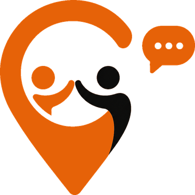

<!doctype html>
<meta charset="utf-8">
<title>Slooin — arka plan fikirleri</title>
<style>
  @import url('https://fonts.googleapis.com/css2?family=Instrument+Sans:wght@400;500;600;700&display=swap');
  * { box-sizing: border-box; margin: 0; padding: 0; }
  body { background: #2a2622; font-family: 'Instrument Sans', system-ui, sans-serif; padding: 24px; }
  .telefon {
    position: relative; width: 390px; height: 844px; overflow: hidden;
    background: #FAF7F3; margin: 0 0 40px 0;
  }
  .zemin { position: absolute; inset: 0; }
  .on {
    position: absolute; inset: 0; display: flex; flex-direction: column;
    align-items: center; padding: 0 20px 28px; z-index: 2;
  }
  .marka { display: flex; flex-direction: column; align-items: center; padding-top: 92px; }
  .marka img.isaret { width: 84px; height: 84px; }
  .marka img.yazi { width: 168px; margin-top: 8px; }
  .bosluk-ust { flex: 0.8; }
  .bosluk-alt { flex: 1.05; }
  .adimlar { display: flex; flex-direction: column; gap: 22px; align-self: center; }
  .adim { display: flex; align-items: center; gap: 16px; }
  .adim svg { width: 30px; height: 30px; flex: none; }
  .adim span { font-size: 17px; font-weight: 500; color: #17130F; letter-spacing: -0.2px; }
  .buton {
    width: 100%; text-align: center; background: #FE7813; color: #fff;
    border-radius: 999px; padding: 17px 0; font-size: 17px; font-weight: 600;
    box-shadow: 0 8px 20px rgba(254,120,19,.28);
  }
  .alt-metin { margin-top: 14px; font-size: 15px; color: #6E6660; }
  .alt-metin b { color: #17130F; font-weight: 600; }
  .etiket {
    color: #FAF7F3; font-size: 15px; font-weight: 600; margin: 0 0 10px;
    display: flex; align-items: baseline; gap: 10px;
  }
  .etiket i { color: #FE7813; font-style: normal; font-weight: 700; }
  .etiket small { color: #a49b92; font-weight: 400; font-size: 13px; }
</style>

<script>
  // Ortak on plan: her secenek AYNI icerikle degerlendirilsin diye
  // logo, dort baslik ve buton her karta ayni sekilde biniyor.
  const IKONLAR = {
    konum: '<svg viewBox="0 0 24 24"><path d="M12 2.6a7.2 7.2 0 0 0-7.2 7.2c0 5.4 7.2 11.6 7.2 11.6s7.2-6.2 7.2-11.6A7.2 7.2 0 0 0 12 2.6z" fill="#FE7813"/><circle cx="12" cy="9.6" r="2.7" fill="#FAF7F3"/></svg>',
    kisiler: '<svg viewBox="0 0 24 24"><circle cx="9" cy="8.4" r="3.5" fill="#FE7813"/><path d="M2.6 19.4c0-3.5 2.9-5.8 6.4-5.8s6.4 2.3 6.4 5.8z" fill="#FE7813"/><circle cx="17.2" cy="9.4" r="2.6" fill="#FE7813"/><path d="M14.6 19.4c0-2.6 1.4-4.4 3.4-4.4 2 0 3.4 1.8 3.4 4.4z" fill="#FE7813"/></svg>',
    sohbet: '<svg viewBox="0 0 24 24"><path d="M3.4 4.6h17.2v11.2H8.6l-5.2 4z" fill="#FE7813"/></svg>',
    yogunluk: '<svg viewBox="0 0 24 24"><path d="M3 16.4l5.4-5.4 3.6 3.6 6-6" stroke="#FE7813" stroke-width="2.6" fill="none" stroke-linecap="round" stroke-linejoin="round"/><path d="M14.6 7.4h6.4v6.4z" fill="#FE7813"/></svg>',
  }
  const BASLIKLAR = [
    ['konum', 'Check-in Yap'],
    ['kisiler', 'Yakınında kimler var gör'],
    ['sohbet', 'Sohbet Et'],
    ['yogunluk', 'Popüler yerleri keşfet'],
  ]
  function onPlan() {
    return `<div class="on">
      <div class="marka">
        
        
      </div>
      <div class="bosluk-ust"></div>
      <div class="adimlar">
        ${BASLIKLAR.map(([i, m]) => `<div class="adim">${IKONLAR[i]}<span>${m}</span></div>`).join('')}
      </div>
      <div class="bosluk-alt"></div>
      <div class="buton">Hesap oluştur</div>
      <div class="alt-metin">Hesabın var mı? <b>Giriş yap</b></div>
    </div>`
  }
</script>

<div id="tahta"></div>

<script>
  // ---- 1. SICAKLIK HARITASI ------------------------------------------
  // Harita mobilyasi (yol, ada) YOK. Yalnizca yumusak turuncu lekeler:
  // "surada kalabalik var" demenin en soyut hali. Metnin arkasi neredeyse
  // bos kaldigi icin okunurluk en yuksek seviyede.
  function sicaklik() {
    const lekeler = [
      [88, 150, 130, .30], [300, 250, 105, .22], [196, 470, 165, .34],
      [56, 620, 120, .26], [330, 700, 140, .30], [150, 790, 110, .20],
    ]
    return `<svg class="zemin" viewBox="0 0 390 844"><defs>
      ${lekeler.map((l, n) => `<radialGradient id="sg${n}">
        <stop offset="0" stop-color="#FE7813" stop-opacity="${l[3]}"/>
        <stop offset="1" stop-color="#FE7813" stop-opacity="0"/>
      </radialGradient>`).join('')}
    </defs>
    <rect width="390" height="844" fill="#FAF7F3"/>
    ${lekeler.map((l, n) => `<circle cx="${l[0]}" cy="${l[1]}" r="${l[2]}" fill="url(#sg${n})"/>`).join('')}
    </svg>`
  }

  // ---- 2. ESYUKSELTI (TOPOGRAFYA) ------------------------------------
  // Kontur cizgileri. Harita hissi verir ama SOKAK gostermez - yani
  // "burasi neresi" sorusunu acmadan "burasi bir yer" der. Tek bir
  // kume turuncuya donuyor: kalabaligin oldugu nokta.
  function topografya() {
    let d = ''
    const merkezler = [[150, 260, 8], [300, 600, 7], [60, 720, 5]]
    merkezler.forEach(([cx, cy, adet], mi) => {
      for (let i = 1; i <= adet; i++) {
        const r = i * 26
        const sicak = mi === 0 && i <= 2
        d += `<ellipse cx="${cx}" cy="${cy}" rx="${r}" ry="${r * .78}"
          fill="none" stroke="${sicak ? '#FE7813' : '#E6DED5'}"
          stroke-width="${sicak ? 2 : 1.4}" opacity="${sicak ? .55 : .85}"/>`
      }
    })
    return `<svg class="zemin" viewBox="0 0 390 844">
      <rect width="390" height="844" fill="#FAF7F3"/>${d}</svg>`
  }

  // ---- 3. NOKTA IZGARASI ---------------------------------------------
  // Duzenli nokta alani; "sicak" bolgelerde noktalar buyuyup turuncuya
  // donuyor. Ekranin en sakin secenegi: metin her yerde net okunuyor,
  // yogunluk yine de goruluyor.
  function noktaIzgara() {
    const sicaklar = [[195, 250], [90, 560], [310, 690]]
    let d = ''
    for (let y = 30; y < 844; y += 30) {
      for (let x = 20; x < 390; x += 30) {
        let en = 0
        sicaklar.forEach(([sx, sy]) => {
          const u = Math.hypot(x - sx, y - sy)
          en = Math.max(en, Math.max(0, 1 - u / 150))
        })
        const r = 1.6 + en * 3.6
        const renk = en > .35 ? '#FE7813' : '#DED5CB'
        const op = en > .35 ? (.25 + en * .5) : .75
        d += `<circle cx="${x}" cy="${y}" r="${r.toFixed(2)}" fill="${renk}" opacity="${op.toFixed(2)}"/>`
      }
    }
    return `<svg class="zemin" viewBox="0 0 390 844">
      <rect width="390" height="844" fill="#FAF7F3"/>${d}</svg>`
  }

  // ---- 4. RADAR ------------------------------------------------------
  // Tek noktadan yayilan ince halkalar, ekranin disina tasiyor.
  // Urunun vaadini dogrudan anlatiyor: "cevreni tariyorsun".
  // Hareket icin bicilmis kaftan - tek halka disari dogru buyur.
  function radar() {
    let d = ''
    for (let i = 1; i <= 11; i++) {
      const r = i * 52
      d += `<circle cx="195" cy="470" r="${r}" fill="none"
        stroke="${i % 4 === 0 ? '#FE7813' : '#E6DED5'}"
        stroke-width="${i % 4 === 0 ? 1.8 : 1.2}"
        opacity="${i % 4 === 0 ? .4 : .8}"/>`
    }
    const igneler = [[195, 470, 1], [96, 300, .55], [304, 372, .5], [128, 654, .5], [300, 640, .45]]
    d += igneler.map(([x, y, s]) => `<g transform="translate(${x - 13 * s},${y - 13 * s}) scale(${s})">
      <path d="M13 0a10.4 10.4 0 0 0-10.4 10.4C2.6 18.2 13 26 13 26s10.4-7.8 10.4-15.6A10.4 10.4 0 0 0 13 0z" fill="#FE7813"/>
      <circle cx="13" cy="10.2" r="3.9" fill="#FAF7F3"/></g>`).join('')
    return `<svg class="zemin" viewBox="0 0 390 844">
      <rect width="390" height="844" fill="#FAF7F3"/>${d}</svg>`
  }

  // ---- 5. IZOMETRIK SEHIR --------------------------------------------
  // Alt yarida alcak kontrastli izometrik bloklar, yukari dogru
  // soluyor. Ust yari tertemiz kaliyor: logo ve basliklar bos zeminde.
  function izometrik() {
    let d = ''
    let tohum = 7
    const rast = () => (tohum = (tohum * 16807) % 2147483647) / 2147483647
    for (let sira = 0; sira < 7; sira++) {
      for (let s = 0; s < 8; s++) {
        const x = 20 + s * 52 + (sira % 2) * 26
        const y = 470 + sira * 56
        const h = 26 + rast() * 54
        const koyu = rast() > .82
        d += `<g opacity="${(0.16 + sira * 0.1).toFixed(2)}">
          <path d="M${x} ${y} l30 -17 l30 17 l-30 17z" fill="${koyu ? '#FE7813' : '#D8CEC3'}"/>
          <path d="M${x} ${y} l0 ${h} l30 17 l0 -${h}z" fill="${koyu ? '#E06509' : '#C8BCAF'}"/>
          <path d="M${x + 30} ${y + 17} l30 -17 l0 ${h} l-30 17z" fill="${koyu ? '#FE7813' : '#E4DBD1'}"/>
        </g>`
      }
    }
    return `<svg class="zemin" viewBox="0 0 390 844">
      <rect width="390" height="844" fill="#FAF7F3"/>
      <g>${d}</g>
      <rect width="390" height="470" fill="url(#solma)"/>
      <defs><linearGradient id="solma" x1="0" y1="0" x2="0" y2="1">
        <stop offset=".55" stop-color="#FAF7F3"/><stop offset="1" stop-color="#FAF7F3" stop-opacity="0"/>
      </linearGradient></defs></svg>`
  }

  // ---- 6. SADE ZEMIN + TEK HUZME -------------------------------------
  // Neredeyse bos. Butonun arkasindan yukselen tek bir turuncu isik ve
  // ust kosede cok soluk bir halka. En "pahali" duran secenek; dikkati
  // tamamen metne ve butona birakiyor.
  function huzme() {
    return `<svg class="zemin" viewBox="0 0 390 844"><defs>
      <radialGradient id="h1" cx=".5" cy="1" r=".8">
        <stop offset="0" stop-color="#FE7813" stop-opacity=".34"/>
        <stop offset=".55" stop-color="#FE7813" stop-opacity=".08"/>
        <stop offset="1" stop-color="#FE7813" stop-opacity="0"/>
      </radialGradient>
      <radialGradient id="h2">
        <stop offset="0" stop-color="#FE7813" stop-opacity=".12"/>
        <stop offset="1" stop-color="#FE7813" stop-opacity="0"/>
      </radialGradient>
    </defs>
    <rect width="390" height="844" fill="#FAF7F3"/>
    <circle cx="300" cy="120" r="190" fill="url(#h2)"/>
    <rect x="-100" y="380" width="590" height="464" fill="url(#h1)"/>
    <g opacity=".5">
      <circle cx="195" cy="844" r="150" fill="none" stroke="#FE7813" stroke-width="1.2" opacity=".35"/>
      <circle cx="195" cy="844" r="240" fill="none" stroke="#FE7813" stroke-width="1.2" opacity=".22"/>
      <circle cx="195" cy="844" r="330" fill="none" stroke="#FE7813" stroke-width="1.2" opacity=".14"/>
    </g></svg>`
  }

  const SECENEKLER = [
    ['1', 'Sıcaklık haritası', 'harita mobilyası yok, sadece yoğunluk lekeleri', sicaklik],
    ['2', 'Eşyükselti', 'kontur çizgileri; yer hissi var, sokak yok', topografya],
    ['3', 'Nokta ızgarası', 'en sakin seçenek; yoğunluk noktaların boyutunda', noktaIzgara],
    ['4', 'Radar', 'tek noktadan yayılan halkalar; "çevreni tarıyorsun"', radar],
    ['5', 'İzometrik şehir', 'alt yarıda şehir, üst yarı tertemiz', izometrik],
    ['6', 'Tek huzme', 'neredeyse boş; dikkat tamamen metinde', huzme],
  ]

  document.getElementById('tahta').innerHTML = SECENEKLER.map(([no, ad, not, fn]) =>
    `<div class="etiket"><i>${no}</i> ${ad} <small>${not}</small></div>
     <div class="telefon" id="s${no}">${fn()}${onPlan()}</div>`
  ).join('')
</script>
